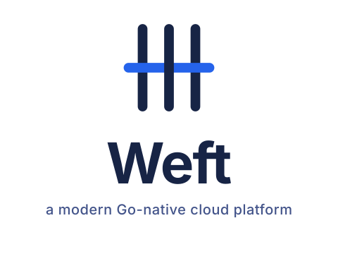
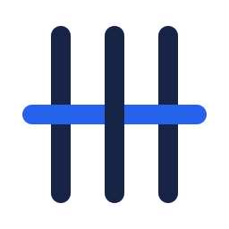
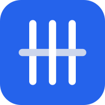

Tous les fichiers vivent sous static/. Le favicon et le manifest sont déjà câblés dans layouts/_default/baseof.html ; tout charge en SVG natif. Si tu as besoin de PNG/ICO en fallback pour iOS <16 ou scrapers, exécute static/logo/build-raster.sh.
L'unité de base : favicon, app icon, badge GitHub, sticker. Trois fils de chaîne navy + un fil de trame bleu qui passe dessus / dessous / dessus.
Lockup pour la nav, le footer, les signatures, les README. Icône + texte « Weft », alignement par ligne de base.
Pour le hero index.html de la landing — icône large centrée, wordmark, tagline en couleur secondaire.

Une seule encre, trame coupée en deux segments pour que le tressage reste lisible géométriquement (sans s'appuyer sur le contraste bleu/navy). Pour impression, embroidery, watermarks, badges README mono. La couleur vient de currentColor — pilote-la via CSS.
Simulation d'un onglet de navigateur. Le favicon ci-dessus, dans la barre de titre de cette page, est rendu en temps réel par ton navigateur — c'est ../favicon.svg.

Weft — a modern Go-native cloud platformMark inversé sur fond bleu primaire, coins arrondis (rx=36 ≈ 20% du côté, dans la safe area des HIG iOS). Servira si quelqu'un ajoute le site à l'écran d'accueil iOS.

| Rôle | Hex | Usage |
|---|---|---|
| Bleu primaire | #2563eb | Le fil de trame, l'accent, les CTA primaires |
| Navy | #172445 | Les fils de chaîne, texte du wordmark, structure |
| Mid-navy | #43548a | Tagline, hiérarchie secondaire, indicateurs de mouvement |
| Light fog | #ccd6ec | Fond de page, manifest background_color |
| Chemin | Rôle |
|---|---|
static/favicon.svg | Favicon principal, tout-navigateur récent |
static/apple-touch-icon.svg | iOS Safari 16+, écran d'accueil |
static/site.webmanifest | PWA manifest (theme-color, icons) |
static/logo/weft-A-weave.svg | Mark 2-tons, source canonique |
static/logo/weft-A-mono.svg | Mark 1-encre via currentColor |
static/logo/weft-wordmark-h.svg | Lockup horizontal mark + « Weft » |
static/logo/weft-lockup-vertical.svg | Lockup vertical + tagline (hero) |
static/logo/build-raster.sh | Optionnel : génère .ico / .png pour fallback ancien |
layouts/index.html à la place du mesh-3d.svg actuel — ou en complément.